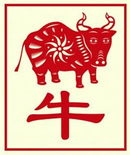

The Chinese Zodiac: Ox

- Fixed Season: Winter
- Fixed Direction: North-Northeast
- Fixed Element: Earth/Yin
- Associated Sun Sign: Capricorn
The Ox is a person who will often find themselves in the same place or situation for longer periods than others. Whether it is in a relationship, a job, or just a phase of their life, the Ox is built to both endure and succeed. Part of this is that they will tend to favor those things that they are already familiar with. This allows them to make the most of what they can do, and in many ways to eliminate the chaos from their own world that seems to control so many others.
As someone who holds out for what they want, the Ox is also someone for whom discipline is second nature. They can maintain a level of work and a state of mind far beyond many of their peers, both in their personal and professional lives. It can be hard, however, to endure sudden changes in their life, at least for the first few days. As the Ox slowly refocuses their mind, though, they will soon return to a more stable and happy state. It simply takes them a little longer than others to figure out what is the best path for them. Though once they do, they are strong and determined.
As someone who takes their time with change and must feel before they can act, the Ox is prone to follow the same sort of pattern in all of their relationships. They are quick to be friendly with others, but slow to transition into a deeper relationship. Some signs struggle as a result of this to get to know the Ox, though it is never impossible to break through that initial barrier. For those born under the sign of the Ox care feel for others with great force. Should if a partner can be patient and allow an Ox the time they need to adjust, the end result will be a relationship that will stand up to all the tests of time.